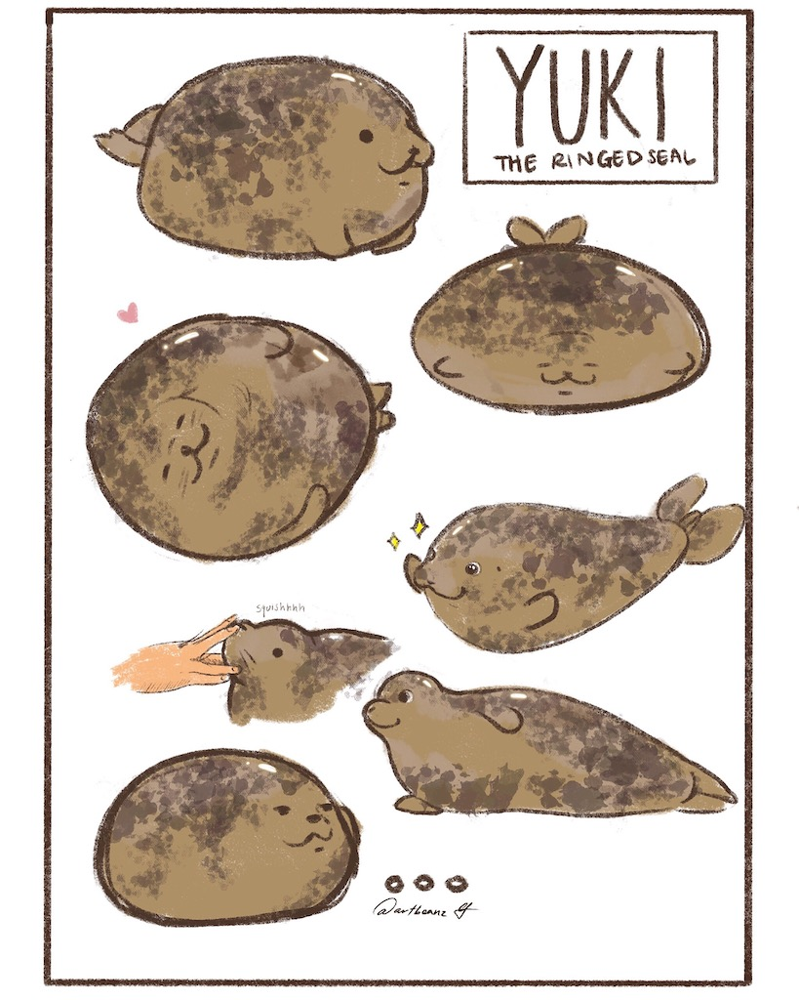
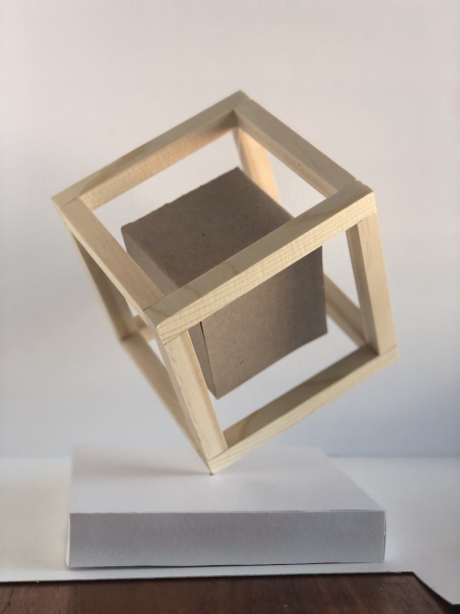
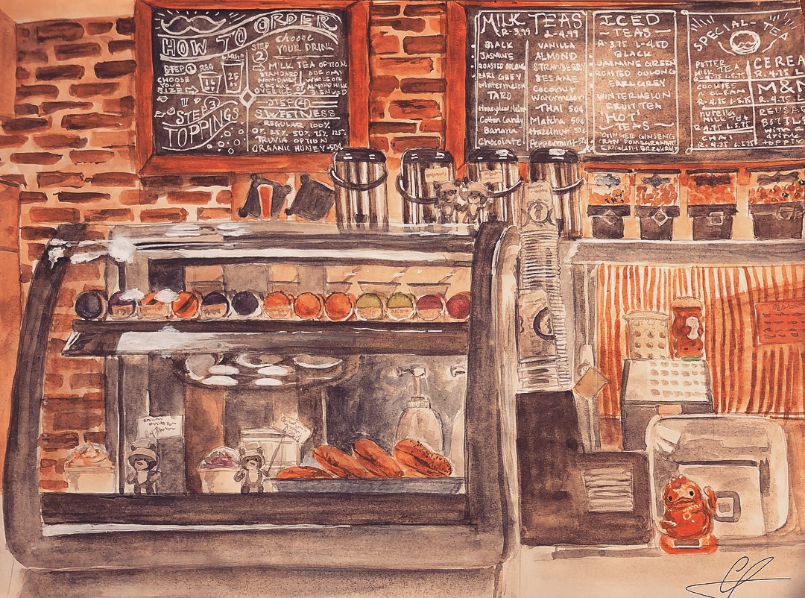

Some projects I did for fun was the seal drawing, the cafe watercolor, and the photograph of the floating
cube. A couple years ago I started digital design, and one of my favorite things is Yuki the seal, who
lives in Japan. I drew different angles of the seal from images that I found and experimented with the
colors and textures of digital drawing.
The floating cube was a project back in one of my previous design classes, where we had to create a marquee
using cubes. My final product was using wooden dowels to create a frame of a cube, and a cardboard cube
stringed with fishing line in between to create the illusion that it is floating.


The other drawing is a watercolor drawing I recreated from a cafe I was in when I went on vacation in Hawaii.
I wanted to focus on the details of the cafe like the macarons, or the metal tea dispensers, and the white
lining of the menu board to create a more realistic look to it.